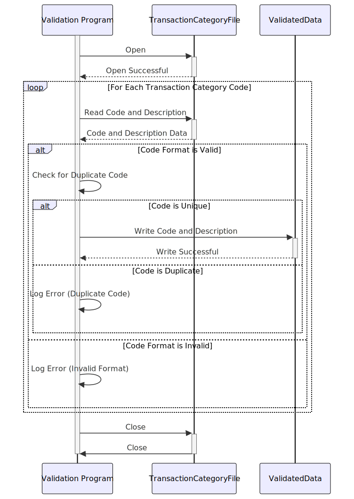

Gerado em: 1º de outubro de 2024
Título do Documento: Programa de Validação e Processamento de Código de Categoria de Transação de Cartão de Crédito
Descrição Resumida:
Este programa valida e processa códigos de categoria de transação de cartão de crédito de um arquivo (“trancatg.txt”). Ele garante que cada código seja exclusivo e siga um formato específico e, em seguida, gera os dados validados para um novo arquivo ou sistema.
Histórias do Usuário:
Como analista financeiro, preciso garantir que todos os códigos de categoria de transação sejam válidos e estejam formatados corretamente para garantir relatórios e análises precisos.
Epic Relacionado:
4 - Processamento de Transações
Requisitos Funcionais:
- Ler Códigos de Transação: O programa deve ler códigos de categoria de transação e descrições do arquivo de entrada (“trancatg.txt”).
- Validar Formato do Código: Cada código deve ser validado para garantir que siga um formato específico (por exemplo, seis dígitos). Se um código violar este formato, o programa deverá registrar um erro e pular para o próximo código.
- Validar Exclusividade do Código: O programa deve verificar se há códigos de transação duplicados. Se um código duplicado for encontrado, o programa deverá registrar um erro e continuar processando outros códigos.
- Gerar Dados Validados: O programa deve gerar os códigos de categoria de transação validados e suas descrições. Essa saída pode ser direcionada para um novo arquivo ou integrada a outro sistema, dependendo dos requisitos específicos.
Requisitos Não Funcionais:
- Desempenho: O programa deve processar os códigos de transação com eficiência, especialmente para arquivos de entrada grandes.
- Confiabilidade: O programa deve ser confiável na validação e processamento dos dados, garantindo que todos os códigos válidos sejam capturados e os erros sejam tratados adequadamente.
- Manutenibilidade: O código do programa deve ser bem estruturado, documentado e fácil de entender para futuras manutenções e atualizações.
- Tratamento de Erros: O programa deve incluir tratamento de erros robusto para registrar e relatar quaisquer dados inválidos ou situações inesperadas encontradas durante o processamento.
Critérios de Aceitação:
- O programa lê e processa com sucesso todos os códigos de categoria de transação do arquivo de entrada.
- O programa valida com precisão o formato e a exclusividade de cada código de categoria de transação.
- O programa registra e relata quaisquer erros encontrados durante a validação.
- O programa gera um arquivo de saída ou fluxo de dados contendo apenas códigos de categoria de transação válidos e suas descrições.
Melhorias de Código:
- Implementar uma estrutura de logging para registrar informações detalhadas sobre o processo de validação, incluindo erros e avisos.
- Adicionar testes de unidade para verificar funções individuais do programa e garantir a qualidade do código.
- Considere usar um banco de dados para armazenar os códigos de categoria de transação validados para pesquisa e gerenciamento mais eficientes.
Melhorias de Segurança:
- Proteja os arquivos de entrada e saída que contêm dados de transações para evitar acesso não autorizado ou modificação.
- Implemente controles de acesso adequados para restringir a modificação das regras de validação e da lógica do programa.
Diagrama Conceitual:

–Made by “Smart Engineering” (by Compass.UOL)–